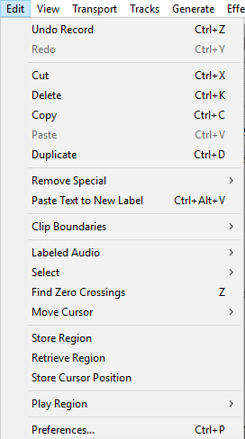

Edit Menu
From Audacity Development Manual
There are many commands available from this menu so some commands are grouped into a cascading sub-menu (as denoted on this page by a table of commands).
The Edit Menu
- Click, or hover, on any menu item in the image to read about that command.
- 
Undo CTRL + Z
Undoes the last editing operation you performed to your project. You can undo as many times as you want, all the way back to when you opened the window. To undo many operations, select History... from the View Menu. The name of this menu item will change to reflect what will be undone; if you just recorded some audio, the menu item name will be Undo Record.
Redo CTRL + Y
Redoes any editing operations that were just undone. After you perform a new editing operation, you can no longer redo the operations that were undone.
Cut CTRL + X
Removes the selected audio data and/or labels and places these on the Audacity clipboard. Audio or labels after the selection move leftwards.
Delete CTRL + K
Similar to Cut, but removes the audio data and/or labels that are currently selected without copying them to the Audacity clipboard.
Copy CTRL + C
Copies the selected audio data to the Audacity clipboard without removing it from the project.
Paste CTRL + V
Pastes audio which has been cut or copied to the Audacity clipboard, either inserting it into the selected track(s) at the cursor point, or replacing the current selection region(s).
Duplicate CTRL + D
Creates a new track containing only the current selection as a new clip.
Remove Special
Commands for more "advanced" removal of audio:
- Split Cut and Split Delete are a "special" cut or delete which make the audio or labels to right of the selection stay in current position instead of moving leftwards.
- Silence replaces the current selection with silence.
- Trim removes all audio from the current clip except the selected part, creating its own clip from the remaining, selected, audio.
| Split Cut | CTRL + ALT + X |
| Split Delete | CTRL + ALT + K |
| Silence Audio | CTRL + L |
| Trim Audio | CTRL + T |
Paste Text to New Label CTRL + ALT + V
Pastes the text on the system clipboard (or text from a label stored in the Audacity clipboard) to a new label at the cursor or region position in the currently selected label track. A new label track is created if none exists.
Clip Boundaries
Create or remove separate clips in the audio track. A clip inside an audio track is a separate section of that track which has been split so that it can be manipulated somewhat independently of the other clips in the track.
| Split | CTRL + I |
| Split New | CTRL + ALT + I |
| Join | CTRL + J |
| Detach at Silences | CTRL + ALT + J |
Labeled Audio
Labeled Audio commands apply standard Edit Menu commands to the audio of one or more regions that are labeled. The labels themselves are not affected. This can be useful for example to remove multiple unwanted sounds at one go from an audio track where you have already labeled the unwanted sounds.
To use, drag a selection in the Label Track that fully includes (or extends beyond) each region label whose audio is to be affected. Labeled Audio Split can also mark an audio split in the waveform at each point label where the selection touches (or extends beyond) the point label.
The following Edit commands can be applied to labeled audio.
| Cut | ALT + X |
| Delete | ALT + K |
| Split Cut | ALT + SHIFT + X |
| Split Delete | ALT + SHIFT + K |
| Silence Audio | ALT + L |
| Copy | ALT + SHIFT + C |
| Split | ALT + I |
| Join | ALT + J |
| Detach at Silences | ALT + SHIFT + J |
Select
Select ranges of audio.
| All | CTRL + A |
| None | CTRL + SHIFT + A |
| Spectral | > |
| Left at Playback Position | [ |
| Right at Playback Position | ] |
| Track Start to Cursor | SHIFT + J |
| Cursor to Track End | SHIFT + K |
| Cursor to Stored Cursor Position | |
| In All Tracks | CTRL + SHIFT + K |
| In All Sync-Locked Tracks | CTRL + SHIFT + Y |
Find Zero Crossings Z
Find Zero Crossings helps to avoid clicks at edit points when making cuts and joins by moving the edges of a selection region (or the cursor position) very slightly so they are at a rising zero crossing point.
Move Cursor
Move the cursor directly to the start or end of the selection or the track.
| to selection start | |
| to selection end | |
| to track start | J |
| to track end | K |
Store Region
Stores the current position of the selection region or cursor, as observed on the Timeline. The position of this region or cursor can then be recalled by using Retrieve Region (see below). Using this command again will overwrite the previously stored position information.
The position is saved in memory for each project. Therefore using Retrieve Region will not have any effect in another project unless you have already used Store Region in that project. When you close a project, its stored region is discarded.
The Store Region command is grayed-out if there are no audio tracks.
Retrieve Region
Moves the selection region or cursor to the position stored by the last Store Region command (see above). If a region is retrieved, this is only explicitly placed inside those tracks which are currently selected.
|
Store Cursor Position
Stores a cursor position as defined below, which can then be used with the command to create or modify a selection region.
- If audio is not actively playing, recording or paused: the stored cursor position is the position of the editing cursor or of the left edge of the selection region.
- If audio is active: the stored cursor position is the position of the Playback cursor or Recording cursor at the time you issue the command to store. For easier use without having to Pause, you may want to add a shortcut for "Store Cursor Position".
If you want to store the position of the editing cursor (or both boundaries of a selection) while audio is active, use the Store Region command above.
| There is no visual cue marker to remind you what position you stored, you will need to remember it. |
Play Region
Lock: Activating this menu item locks standard playback to the current position of the playback region (or to the current position of the Quick-Play region). This locked position is indicated by a red region in the Timeline instead of the normal gray region in the Timeline. The locked region is then always used when starting playback with a play button or with SPACE, instead of starting from the cursor or region position in the waveform. See Play Region Lock on the Timeline page for details.
This menu item is only active when there is a playback region or Quick-Play region in the Timeline displaying in normal gray (unlocked) color.
Unlock: Removes the Play Region Lock. This menu item is only active when the Lock is already active (the locked region shows in red color in the Timeline).
Play Region Lock or Unlock may be performed even when the track is playing, recording or paused.
Preferences... CTRL + P
Displays the Preferences dialog. Preferences enable you change most of the default behaviors and settings of Audacity.